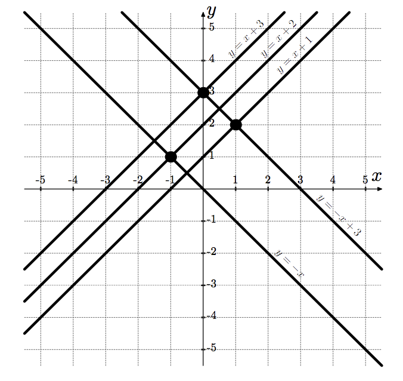
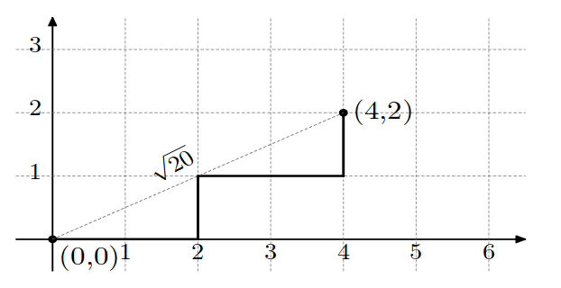

A: Integer Points
题目：
DLS and JLS are bored with a Math lesson. In order to entertain themselves, DLS took a sheet of paper and drew 𝑛 distinct lines, given by equations 𝑦=𝑥+𝑝𝑖 for some distinct 𝑝1,𝑝2,…,𝑝𝑛.
Then JLS drew on the same paper sheet 𝑚 distinct lines given by equations 𝑦=−𝑥+𝑞𝑖 for some distinct 𝑞1,𝑞2,…,𝑞𝑚.
DLS and JLS are interested in counting how many line pairs have integer intersection points, i.e. points with both coordinates that are integers. Unfortunately, the lesson will end up soon, so DLS and JLS are asking for your help.
Input
The first line contains one integer 𝑡 (1≤𝑡≤1000), the number of test cases in the input. Then follow the test case descriptions.
The first line of a test case contains an integer 𝑛 (1≤𝑛≤10^5), the number of lines drawn by DLS.
The second line of a test case contains 𝑛 distinct integers 𝑝𝑖 (0≤𝑝𝑖≤10^9) describing the lines drawn by DLS. The integer 𝑝𝑖 describes a line given by the equation 𝑦=𝑥+𝑝𝑖.
The third line of a test case contains an integer 𝑚 (1≤𝑚≤10^5), the number of lines drawn by JLS.
The fourth line of a test case contains 𝑚 distinct integers 𝑞𝑖 (0≤𝑞𝑖≤10^9) describing the lines drawn by JLS. The integer 𝑞𝑖 describes a line given by the equation 𝑦=−𝑥+𝑞𝑖.
The sum of the values of 𝑛 over all test cases in the input does not exceed 105. Similarly, the sum of the values of 𝑚 over all test cases in the input does not exceed 105.
In hacks it is allowed to use only one test case in the input, so 𝑡=1 should be satisfied.
Output
For each test case in the input print a single integer — the number of line pairs with integer intersection points.
Example
input
1 | 3 |
output
1 | 3 |
Note
The picture shows the lines from the first test case of the example. Black circles denote intersection points with integer coordinates.

题解：
pi与qi同为奇数或者同为偶数时才会有整数的交点。
代码：
1 | #include<stdio.h> |
B Grow The Tree
题目：
Gardener Alexey teaches competitive programming to high school students. To congratulate Alexey on the Teacher’s Day, the students have gifted him a collection of wooden sticks, where every stick has an integer length. Now Alexey wants to grow a tree from them.
The tree looks like a polyline on the plane, consisting of all sticks. The polyline starts at the point (0,0). While constructing the polyline, Alexey will attach sticks to it one by one in arbitrary order. Each stick must be either vertical or horizontal (that is, parallel to 𝑂𝑋 or 𝑂𝑌 axis). It is not allowed for two consecutive sticks to be aligned simultaneously horizontally or simultaneously vertically. See the images below for clarification.
Alexey wants to make a polyline in such a way that its end is as far as possible from (0,0). Please help him to grow the tree this way.
Note that the polyline defining the form of the tree may have self-intersections and self-touches, but it can be proved that the optimal answer does not contain any self-intersections or self-touches.
Input
The first line contains an integer 𝑛 (1≤𝑛≤100000) — the number of sticks Alexey got as a present.
The second line contains 𝑛 integers 𝑎1,…,𝑎𝑛 (1≤𝑎𝑖≤10000) — the lengths of the sticks.
Output
Print one integer — the square of the largest possible distance from (0,0) to the tree end.
Examples
input
1 | 3 |
output
1 | 26 |
input
1 | 4 |
output
1 | 20 |
Note
The following pictures show optimal trees for example tests. The squared distance in the first example equals 5⋅5+1⋅1=26, and in the second example 4⋅4+2⋅2=20.

题解：
对数组排序，前n/2的总和与剩余的总和即是ans
代码：
1 | #include<stdio.h> |
D1. The World Is Just a Programming Task (Easy Version)
题目：
This is an easier version of the problem. In this version, 𝑛≤500.
Vasya is an experienced developer of programming competitions’ problems. As all great minds at some time, Vasya faced a creative crisis. To improve the situation, Petya gifted him a string consisting of opening and closing brackets only. Petya believes, that the beauty of the bracket string is a number of its cyclical shifts, which form a correct bracket sequence.
To digress from his problems, Vasya decided to select two positions of the string (not necessarily distinct) and swap characters located at this positions with each other. Vasya will apply this operation exactly once. He is curious what is the maximum possible beauty he can achieve this way. Please help him.
We remind that bracket sequence 𝑠 is called correct if:
𝑠 is empty;
𝑠 is equal to “(𝑡)”, where 𝑡 is correct bracket sequence;
𝑠 is equal to 𝑡1𝑡2, i.e. concatenation of 𝑡1 and 𝑡2, where 𝑡1 and 𝑡2 are correct bracket sequences.
For example, “(()())”, “()” are correct, while “)(“ and “())” are not.
The cyclical shift of the string 𝑠 of length 𝑛 by 𝑘 (0≤𝑘<𝑛) is a string formed by a concatenation of the last 𝑘 symbols of the string 𝑠 with the first 𝑛−𝑘 symbols of string 𝑠. For example, the cyclical shift of string “(())()” by 2 equals “()(())”.
Cyclical shifts 𝑖 and 𝑗 are considered different, if 𝑖≠𝑗.
Input
The first line contains an integer 𝑛 (1≤𝑛≤500), the length of the string.
The second line contains a string, consisting of exactly 𝑛 characters, where each of the characters is either “(“ or “)”.
Output
The first line should contain a single integer — the largest beauty of the string, which can be achieved by swapping some two characters.
The second line should contain integers 𝑙 and 𝑟 (1≤𝑙,𝑟≤𝑛) — the indices of two characters, which should be swapped in order to maximize the string’s beauty.
In case there are several possible swaps, print any of them.
Examples
input
1 | 10 |
output
1 | 5 |
input
1 | 12 |
output
1 | 4 |
input
1 | 6 |
output
1 | 0 |
Note
In the first example, we can swap 7-th and 8-th character, obtaining a string “()()()()()”. The cyclical shifts by 0,2,4,6,8 of this string form a correct bracket sequence.
In the second example, after swapping 5-th and 10-th character, we obtain a string “)(())()()(()”. The cyclical shifts by 11,7,5,3 of this string form a correct bracket sequence.
In the third example, swap of any two brackets results in 0 cyclical shifts being correct bracket sequences.
题解：
暴力求解，在交换ij之后，计算前缀和，计算最小值，求出最小值出现的次数，即为每种交换后，所得到的值，取最大值即可。
代码：
1 | #include<stdio.h> |